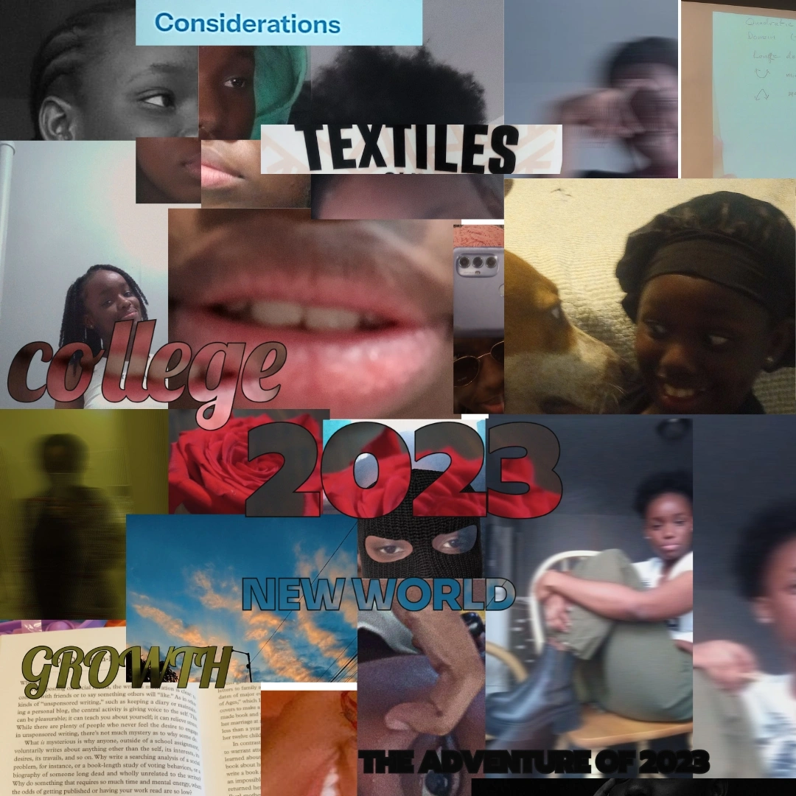

WebkitCoding. “Animated PORTFOLIO Website Template In Html CSS And JS | Personal Website with Typing Animation.” May 2022, YouTube. Accessed November 30, 2023.
youtu.be/YfmYUtGOaTgBehind the Scenes: Crafting My Networking Vlog
How a self-taught web page, lost camera footage, and an improvised shadow sequence turned into an invitation for college students to connect and build community.

Finding the Format & Starting Over
To complete this project, I used skills I taught myself alongside YouTube references to design and build this website. When I first planned my presentation, I imagined filming a third-person advertisement featuring me and my campus surroundings—starting as I put on my jacket, looked into the camera, and asked, “What is networking?” before walking out the door and down the stairs while explaining what it means.
Once I got to school, I improvised a third clip by asking my professor and classmates to introduce themselves on camera. To my surprise, when I arrived home all of the original footage was gone. Instead of giving up, I came up with a fresh idea during my evening routine: telling the story using only my shadow, paired with written captions so every viewer could follow my message clearly regardless of accent or dialect.
Lighting, Timing & Soundtrack
To film the shadow sequence, I positioned the light from my sibling’s phone so that only my silhouette appeared in frame. It took several tries to refine each clip—trimming extra pauses, timing every sentence so the audience could read comfortably, and working around overlapping text clips in Snapchat.
For the soundtrack, I had been listening to Tems’ “Me & You” on repeat because of its upbeat, uplifting rhythm. Choosing that track matched the warmth and purpose behind the video: inviting fellow college students into my definition of networking and showing appreciation for everyone who supported me throughout the semester.
Why Web Design & Campus Networking Matter
I chose to present this vlog through a custom website rather than a poster, TikTok, or standard YouTube upload because I wanted to challenge myself with skills that directly support my goals as a future entrepreneur and web designer.
My research—including insights from Launch Your Career in College: Strategies for Students, Educators, and Parents—reinforced that college is about more than grades and attendance alone. Academic effort matters, but genuine relationships and social engagement are what help us build careers and ventures. Whether you identify as an extrovert or an introvert, networking begins with the courage to shift your mindset, start a conversation, and share who you are.
Guiding Motto“If at first you don’t succeed, try, try, try again.”
Citations for BRE@
Bro Code. “Learn HTML video in 2 minutes.” August 2021, YouTube. Accessed December 3, 2023.
youtu.be/Ki_0iES2cGI